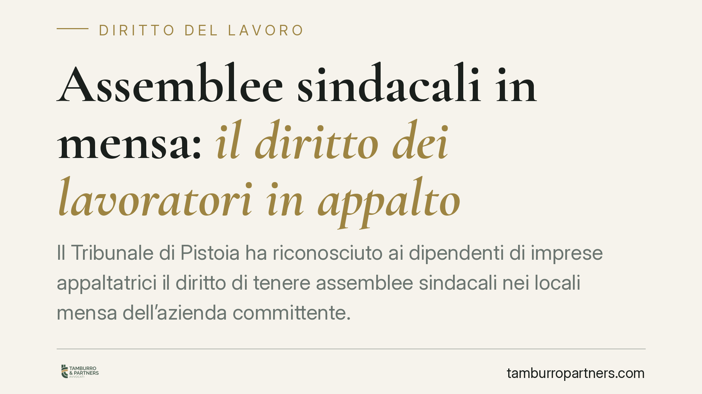

Assemblee sindacali in mensa: il diritto dei lavoratori in appalto
Il Tribunale di Pistoia ha riconosciuto ai dipendenti di imprese appaltatrici il diritto di tenere assemblee sindacali nei locali mensa dell'azienda committente. La decisione, fondata sull'articolo 20 dello Statuto dei lavoratori e su un protocollo aziendale, incide sul rapporto tra committenti, appaltatori e organizzazioni sindacali e chiarisce i confini del diritto di riunione nei contesti di appalto.

Il caso
Il Tribunale di Pistoia, in una pronuncia del 27 maggio 2026, ha accolto le ragioni della Fiom Cgil Firenze Prato Pistoia e ha riconosciuto ai lavoratori di imprese appaltatrici il diritto di svolgere assemblee sindacali nei locali mensa dell'azienda committente.
La questione nasce da un dato fisico prima ancora che giuridico: i dipendenti in appalto operano stabilmente all'interno dello stabilimento del committente, ma non dispongono di spazi propri per riunirsi. Negare l'uso dei locali comuni, in particolare la mensa, significa di fatto svuotare il diritto di assemblea.
Inquadramento normativo
Il riferimento centrale è l'articolo 20 della Legge n. 300/1970 (Statuto dei lavoratori), che riconosce ai lavoratori il diritto di riunirsi in assemblea, retribuita o meno, nell'unità produttiva in cui prestano la propria opera. La norma precisa che l'assemblea si tiene "fuori dell'orario di lavoro" oppure entro il limite di dieci ore annue retribuite, e "nell'unità produttiva in cui prestano la propria opera".
Il punto delicato è l'espressione "unità produttiva". Nei rapporti di appalto genuino il lavoratore dell'appaltatore presta materialmente la propria opera all'interno dello stabilimento del committente. Il Tribunale ha valorizzato questo elemento sostanziale: il luogo in cui si svolge l'attività lavorativa è quello che rileva ai fini del diritto di assemblea, a prescindere da quale sia il datore di lavoro formale.
Nel caso concreto la decisione si appoggia anche a un protocollo aziendale che disciplinava l'uso degli spazi comuni. Questo aspetto è rilevante: gli accordi di secondo livello possono integrare e specificare le garanzie dello Statuto, rendendole operative in contesti complessi come quelli con più imprese presenti nel medesimo sito.
Implicazioni pratiche
Per le aziende committenti la pronuncia conferma che la presenza di appaltatori nello stabilimento comporta oneri non solo in materia di sicurezza, ma anche sul piano delle relazioni sindacali. Non è possibile opporre la mera estraneità rispetto al rapporto di lavoro dell'appaltatore per negare l'accesso agli spazi comuni ai fini assembleari.
Per le imprese appaltatrici significa che i propri dipendenti conservano pienamente i diritti collettivi anche quando operano presso terzi. La frammentazione del ciclo produttivo in più soggetti non riduce le garanzie dei lavoratori coinvolti.
Per le organizzazioni sindacali si consolida la possibilità di raggiungere anche i lavoratori in appalto nei luoghi dove effettivamente lavorano, superando l'ostacolo pratico della dispersione delle sedi formali dei datori di lavoro.
Resta fermo che il diritto va esercitato nei limiti dell'articolo 20: rispetto del monte ore, modalità che non blocchino l'attività produttiva e, dove presente, osservanza del protocollo aziendale.
Cosa fare in concreto
- Committenti: verificate i protocolli esistenti sull'uso degli spazi comuni e, se assenti, valutate di disciplinare in via preventiva modalità e tempi di accesso ai locali per le assemblee del personale in appalto.
- Appaltatori: informate i vostri dipendenti sul loro diritto di assemblea presso il sito del committente e coordinatevi con quest'ultimo sulle modalità pratiche.
- RSU e sindacati: formulate le richieste di assemblea per iscritto, indicando orario, durata e numero di ore impiegate, così da ancorarle ai limiti di legge.
- Tutti i soggetti: distinguete sempre l'appalto genuino dalla somministrazione o dall'interposizione illecita, perché l'inquadramento del rapporto incide sui diritti applicabili.
- In caso di contestazione: documentate per iscritto il diniego ricevuto e le ragioni addotte, elemento spesso decisivo in sede giudiziale.
Osservazioni conclusive
La decisione del Tribunale di Pistoia si inserisce in un orientamento che guarda alla realtà sostanziale del luogo di lavoro più che alle cornici contrattuali formali. Nei contesti produttivi articolati su più imprese, i diritti collettivi seguono il lavoratore dove esso opera. Consigliamo di anticipare la questione attraverso accordi chiari, evitando che il diniego di uno spazio si traduca in un contenzioso.
Contributo informativo a cura di Tamburro & Partners - Avv. Giuseppe Tamburro. Non costituisce parere legale.
Ogni storia di lavoro ha i suoi tempi.
Se gestisci HR e vuoi un confronto su contenzioso, ispezioni o licenziamenti, scrivi allo studio. Ti rispondiamo entro un giorno lavorativo.